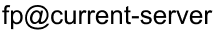
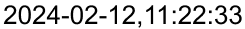
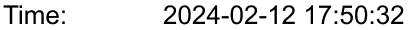
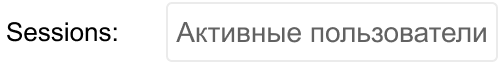
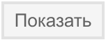
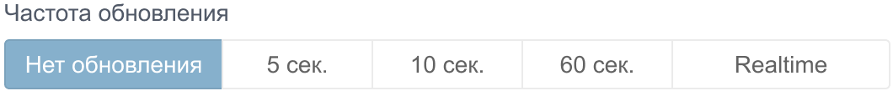
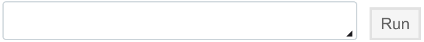

Сервера
На вкладке “Сервера” располагается одноимённый редактор, который предназначен для мониторинга состояний серверов (узлов) системы, для их запуска/останова в режиме RUN-TIME, удаления, переключения мастера, просмотра сообщений о событиях на сервере, запуска команд ECOMET.
Панель редактора имеет следующий вид:
{kind=link}
Панель управления
В верхней части редактора расположена панель управления:
{kind=link}
На панели управления серверами есть несколько элементов:
Элемент | Описание |
|---|---|
Элемент отражает текущее состояние режима RUN-TIME. Имеет 2 значения RUN/STOP. | |
Кнопка запуска/останова проекта в режиме RUN-TIME. Может быть в 2-х состояниях STOP/RUN. | |
 | Элемент, который отражает имя сервера, к которому на данный момент подключен браузер. Имеет следующий формат: fp@<имя хоста>. Имя хоста задается в процессе установки Faceplate на сервер. |
 | Элемент отражает текущее время на сервере. |
Кнопка позволяет назначить/переключить мастер-сервер. Надпись на кнопке отображает имя мастер-сервера в текущий момент. |
Мониторинг состояния серверов
Для каждого сконфигурированного сервера выводится информация о его текущем состоянии. Информация выводится в карточках серверов, которые обновляются каждые 5 секунд.
Карточка сервера выглядит следующим образом:
{kind=link}
Каждая карточка состоит из 3-х областей:
заголовок с именем и IP-адресом сервера,
системная информация о сервере,
консоль, отражающая события, происходящие на сервере, в хронологическом порядке (логи), и строки для ввода команд СУБД ECOMET.
Элемент карточки | Описание |
|---|---|
Имя сервера и его IP-адрес. Если иконка (показывает статус узла) зеленого цвета , значит сервер подключен, активен, вся необходимая информация скопирована, и сервер может принять роль мастера. В противном случае иконка . | |
 | Текущее время на сервере. |
Объем занятой и доступной оперативной памяти. | |
Процент использования ЦПУ. Для узлов работающих под управлением ОС Linux процент рассчитывается по формуле: Load_% = 100 * (1 - Factor / (Factor +Load_rup)), где Load_% - рассчитанный процент использования ЦПУ, Load_rup - среднее количество времени, проводимое процессами в очереди ожидания, Factor - корректирующий фактор. Время ожидания процессами своей очереди является косвенным показателем оценки нагрузки на ЦПУ. Для перевода этого параметра в % необходимо учитывать мощность и конфигурацию процессора. Это выполняется через подстройку корректирующего фактора. Более подробную информацию можно найти по ссылке https://linux.die.net/man/3/cpu_sup. Для узлов работающих под управлением Windows корректирующий фактор не участвует в расчете нагрузки на ЦПУ. | |
 | Количество активных сессий на данном узле. Соответствует количеству подключений. Среда исполнения использует 2 постоянных подключения и по одному динамическому подключению на каждое формирование отчета. Это означает что при открытии в браузере среды исполнения на узле появляются 2 новые сессии, а во время формирования отчета появляется еще одна сессия. По щелчку на кнопке с количеством сессий открывается окно, содержащее информацию по открытым сессиям: * пользователь под которым выполнено подключение; * время открытия соединения; * доп. информация по подключению. |
?????????????????????????????? | |
Информация об установленной на сервере лицензии. | |
Доменное имя сервера | |
Информация о директориях на сервере. По каждой директории отображается: * Процент заполнения * Объем занятого пространства * Объем доступного пространства | |
Кнопка удаления сервера. Перед удалением сервер должен быть остановлен и отключен. На текущем сервере эта кнопка всегда неактивна. |
На консоле можно просмотреть логи согласно фильтрам посиковой строки:
{kind=link}
{kind=link}
Элемент | Описание |
|---|---|
Фильтр выбора даты, для которой нужно отразить записи о событиях на сервере. | |
Фильтр количества записей за выбранную дату???????????????? | |
Фильтр типа события, для которого нужно вывести сообщения. | |
 | Кнопка для отражения сообщений с выбранными фильтрами. |
 | Установка частоты обновлений: без обновлений, каждые 5, 10, 60 секунд или в режиме реального времени. |
Кнопка сброса фильтров в состояние по умолчанию. | |
 | Строка терминала для запуска команд в ECOMET. |
Внизу панели серверов находится список подключенных серверов, с возможностью просмотра их карточек:
{kind=link}
Настройка горячего резервирования
Повышение отказоустойчивости системы может достигаться за счет обеспечения горячего резервирования серверов. В режиме горячего резервирования имеется один мастер, остальные сервера работают в режиме stand-by. Мастер выполняет опрос контроллерного оборудования, обеспечивает ведение архивов и работу системы сообщений. Сервера, находящиеся в режиме stand-by, также как и мастер могут использоваться для подключения из среды разработки или среды исполнения. При выходе по какой-либо причине из строя мастер-сервера (отказ оборудования, перебои в электроснабжении и т. д.), первый стоящий в режиме standby сервер диагностирует сбой мастер-сервера и берет нагрузку на себя: устанавливает подключения к контроллерному оборудованию, запускает процессы системы архивирования и системы сообщений. Клиентские подключения автоматически переключаются на доступный сервер. При восстановлении сервера не происходит автоматического возврата ему роли мастера. При необходимости можно сделать это явно.
Для обеспечения горячего резервирования система должна состоять минимум из 2 серверов. Физические сервера должны находиться в одной локальной сети и на каждом сервере должен быть открыт доступ к порту 4369. В режиме горячего резервирования между серверами передается большое количество информации (пропорционально масштабу проекта), поэтому канал связи между серверами должен иметь высокую пропускную способность (минимум 100 мбит/сек.).
Добавление нового сервера
Для добавления к системе нового сервера нужно:
Подготовить физический сервер, установив на нем Faceplate.
Запустить приложение Faceplate на новом сервере. При первом запуске Faceplate на резервном сервере приложение ждет пока мастер-сервер подключится и скопирует на него необходимые данные.
В редакторе серверов на действующем проекте щелкнуть по кнопке “Добавить” на панели управления ?????????????????????????и задать имя узла для добавляемого сервера. Имя узла имеет следующий формат: fp@<имя хоста>. Имя хоста должно совпадать с именем, определенным в процессе установки.
В результате появится карточка нового сервера и мастер-сервер начнет копирование необходимой информации на новый сервер. Когда копирование будет завершено иконка добавленного сервера станет зеленого цвета, это означает что сервер в работе и готов принять роль мастера.
Возможные проблемы
Если при добавлении сервера к системе в его карточке флаг состояния connected остается false, необходимо убедиться, что
доменное имя для нового сервера совпадает с именем хоста в имени узла сервера. Имя узла задается при установке Faceplate.
новый сервер доступен с мастер-сервера. Для этого можно воспользоваться командой ping. При пинговании нужно использовать доменное имя (имя хоста).
на новом сервере открыт порт 4369. Для этого можно воспользоваться утилитой telnet.
Если проблема не устранена нужно перезагрузить новый сервер и повторно запустить Faceplate.
Назначение нового мастера
Сервер, выполняющий роль мастера, обеспечивает работу режима RUN-TIME. Мастер выполняет опрос контроллерного оборудования, обеспечивает ведение архивов и работу системы сообщений. Если для системы настроено горячее резервирование, то роль мастера могут принимать на себя сервера, находящиеся в режиме stand-by. Передача роли мастера между серверами выполняется при отказе сервера, выполняющего роль мастера, или при явном задании нового мастера в редакторе серверов.
Для передачи роли мастера другому серверу нужно щелкнуть по кнопке выбора мастера на панели управления:
Будет выведен список серверов, готовых принять роль мастера.
Если ни один из серверов не готов принять роль мастера, будет выведено сообщение:
Запуск/Останов проекта в RUN-TIME
В режиме RUN-TIME на сервере, выполняющем роль мастера, работают процессы обеспечивающие опрос контроллерного оборудования, ведение архивов, работу системы сообщений и ряд других процессов, обеспечивающих управление объектом. При выходе из режима RUN-TIME перечисленные процессы завершаются и система перестает выполнять функции по управлению объектом - переходит в режим STOP. Среда разработки проекта функционирует независимо от состояния режима RUN-TIME.
Для запуска проекта в RUN-TIME нужно щелкнуть по кнопке “RUN” на панели управления:
В результате будет на мастер-сервере будет выполнен запуск процессов, обеспечивающих управление объектом, после чего кнопка приобретет следующий вид:
Для выхода из режима RUN-TIME нужно щелкнуть по кнопке STOP.